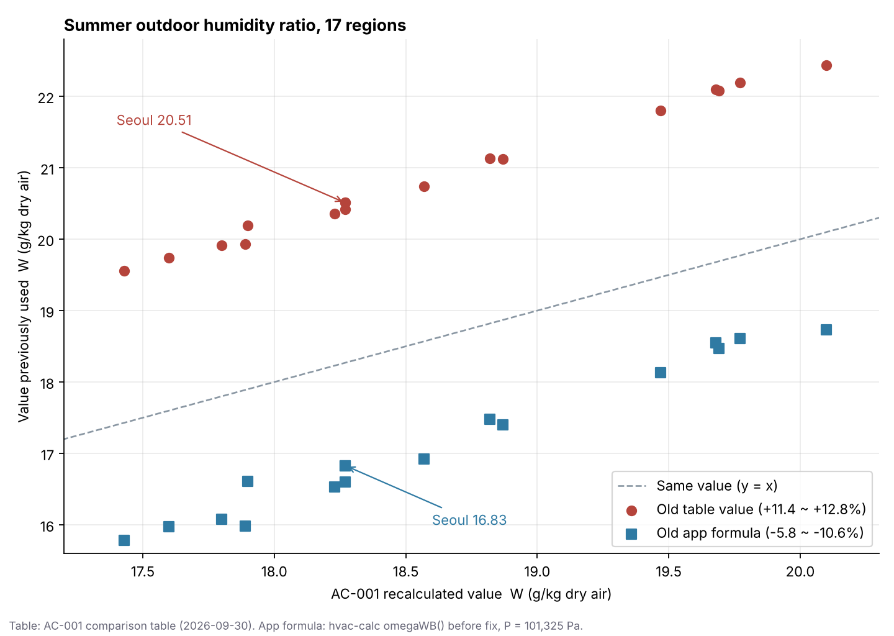

건축도면을 넣으면 AI가 위생 계통도, 평면도, 상세도와 수량산출의 초안을 만들어주는 웹앱을 만들고 있습니다. 설계자가 화장실과 PS 위치, 관통 가능 구간을 확인하고 배관 경로를 고쳤다면, 그 판단이 도면과 수량에도 이어져야 합니다. 제가 풀고 싶은 문제는 바로 이 연결입니다.
HVAC·소방 설계를 하며 위생배관경, 밸브계통도, 용량계산서, 덕트 계산서, 시방서, 스프링클러 설비, 소방 법규검토 웹앱을 만들었습니다. 기능을 하나씩 만들 때는 '계산이 맞는가'를 주로 봤습니다. 도면 전체를 다루는 앱으로 넓히면서 질문이 달라졌습니다. “이 선은 어떤 기준으로 그렸고, 설계자가 바꾸면 무엇을 다시 계산해야 하나?”
그래서 설계기준·설치기준·성과품 기준을 정리하고, 그 기준이 앱 코드와 같은지 하나씩 맞춰보고 있습니다. 이번에 대조한 AC-001은 지역별 HVAC 외기조건입니다. 위생배관의 기준은 아니지만, 기준에 적힌 숫자를 제품의 규칙으로 옮길 때 무엇이 어긋날 수 있는지 보여준 사례였습니다.
같은 표인데, 열마다 만든 방법이 달랐습니다
「건축물의 에너지절약설계기준」 [별표 7]은 여름 DB·WB, 겨울 DB·RH를 직접 제시합니다. 여름 RH·수분비와 겨울 WB·수분비는 그 값으로 계산해야 합니다. 저는 일반 국내 프로젝트의 출발값으로 [별표 7]을 채택하고, 나머지 네 열은 원문과 구분해 계산조건을 적었습니다. 다른 설계자가 같은 지역을 다시 계산하고, 발주처가 근거를 따라올 수 있어야 하기 때문입니다.
이 과정에서 서울 여름 수분비가 걸렸습니다. 종전값은 0.02051 kg/kgDA, 계산조건을 명시해 다시 구한 값은 0.01827 kg/kgDA였습니다. AI의 도움을 받아 17개 지역을 대조하니, 여름 수분비의 종전값이 전 지역에서 재계산값보다 11.4~12.8% 크게 적혀 있었습니다. 지역마다 제각각 벌어진 오타와는 패턴이 달랐습니다. 그렇다고 이 패턴만으로 종전 산식을 단정할 수는 없었습니다.
먼저 겨울 습구온도(WB)를 확인했습니다. 영하에서 얼음 포화수증기압을 쓰는 계산으로 종전값을 대조하니 17개 지역 모두 0.1℃ 이내였습니다(반올림 전 차이 −0.07~+0.03℃). 물 포화식을 적용했을 때보다 종전 표의 겨울 WB와 더 잘 맞았습니다. 같은 표 안에서도 이 열에는 재현 가능한 계산 경로가 있다는 단서였습니다. 다음으로 '종전 수분비는 습구온도의 포화수분비를 쓴 것 아닐까'라는 가설을 대조했지만, 차이가 −5.5~+2.3%로 흩어져 설명이 되지 않았습니다. 확인된 것과 기각한 가설을 나누고 나니, 종전 수분비 두 열의 산식은 끝내 특정하지 못했다는 결론이 남았습니다.
제가 정한 원칙은 간단합니다. 출처가 확인되는 원문 입력값은 고정하고, 설명할 수 없는 파생값은 계산 경로를 남겨 다시 구한다. 그래서 파생값 네 열을 같은 계산조건으로 재산출하고, 대기압·물/얼음 포화식의 적용 범위·습구 정의·반올림 자리를 문서에 적었습니다. 종전값도 대조 이력으로 보존했습니다.
기준서를 고치고 나서, 앱 코드를 열어봤습니다
기준서를 고쳤다면 그 기준을 쓰는 앱도 같아야 합니다. 그래서 용량계산서 앱의 코드를 AC-001과 줄 단위로 대조했습니다. 두 가지가 나왔습니다.
첫째, 앱의 지역 데이터에는 종전 파생값이 그대로 남아 있었습니다. 서울 여름 수분비 0.02051이 계산서 머리말에 찍히고, 겨울 가습량 계산은 이 표의 겨울 수분비를 그대로 씁니다. 대구 여름 수분비, 부산 겨울 수분비, 제주 겨울 습구온도처럼 종전 기준서와도 미세하게 다른 칸이 세 군데 있었습니다.
둘째가 더 중요했습니다. 여름 잠열 계산은 표의 수분비를 쓰지 않고, DB·WB에서 매번 수분비를 다시 계산하고 있었습니다. 그런데 그 식이 습구온도계의 수증기압 관계식을 수분비에 그대로 옮긴 형태였습니다. 단위가 맞지 않는 식이라 서울에서 수분비가 0.01683, AC-001 확정값보다 7.9% 작게 나왔습니다. 17개 지역에서 −5.8~−10.6%였습니다.

영향을 설명용 단순 계산으로 확인했습니다. 서울 외기 300㎥/h(건공기 0.1kgDA/s), 실내 26℃·RH 50%(수분비 약 0.01049), 잠열계수 2501kJ/kg으로 놓으면 외기 잠열은 AC-001 기준 약 1.95kW입니다. 종전 표값으로는 약 2.51kW로 29% 크고, 종전 앱 계산식으로는 약 1.58kW로 19% 작습니다. 17개 지역에서 앱 계산식의 외기 잠열은 12~26% 작게 나왔고, 대구가 가장 컸습니다. 전체 코일 용량이 그만큼 달라진다는 뜻은 아닙니다. 현열과 다른 부하가 더해지면 비율은 줄어듭니다. 그래도 계산서를 받아 든 사람은 화면만 봐서는 이 차이를 알 수 없습니다.
수정은 세 가지였습니다. 습구온도에서 수분비를 구하는 식을 AC-001의 단열포화 관계식으로 바꿨고, 17개 지역 데이터를 확정값으로 교체했고, 앱 식으로 계산한 수분비가 기준서 확정값과 같은지 17개 지역 회귀 테스트를 돌렸습니다. 결과는 17/17 일치(차이 0.000006kg/kgDA 이내)입니다. 이제 기준서가 바뀌면 이 테스트가 앱과 기준서의 어긋남을 먼저 알려줍니다.
AI는 17개 지역 일괄 계산, 가설별 대조, 코드와 기준서의 줄 단위 비교를 도왔습니다. 어떤 값을 원문으로 고정할지, 설명할 수 없는 값을 버릴지, 앱의 식을 무엇으로 바꿀지는 제가 정했습니다. 15년 동안 부하계산서를 검토해온 사람이 아니었다면, 0.02051과 0.01683이 둘 다 '그럴듯한 숫자'로 지나갔을 겁니다.
지금 어디까지 왔나
| 상태 | 확인할 수 있는 결과 |
|---|---|
| 완료 | AC-001 파생값 네 열 재계산, 17개 지역 대조, 계산조건 기록, 종전값 이력 보존 |
| 완료 | 용량계산서 앱의 습구-수분비 식 교체, 지역 데이터 교체, 17개 지역 회귀 테스트 17/17 통과 |
| 확인 중 | 수정 이전에 저장된 프로젝트를 다시 열 때 종전 외기값이 남는지, 출력물 머리말 반영 |
| 다음 적용 | 위생설계 앱에서 원문 근거 → 계산 → 설계자의 선택 → 도면·수량의 연결을 실제 도면으로 검증 |
외기조건을 위생설계 앱에 넣는다는 뜻은 아닙니다. 이번에 배운 건 기준서와 코드 사이에 테스트를 두지 않으면, 둘은 조용히 따로 간다는 사실입니다. 위생설계 앱에서도 관경표, 부하단위, 통기 기준 하나하나를 기준서 값과 맞추는 테스트로 묶을 생각입니다. 화장실과 PS 위치를 확인하고 AI가 경로를 제안했을 때, 설계자가 바꾼 내용이 계통도·평면도·수량에 어디까지 반영되는지도 같은 방식으로 확인할 수 있어야 합니다.
저는 현장의 문제를 설계자가 쓸 수 있는 도구로 만들고, 결과를 함께 검증하는 FDE를 목표로 합니다. 이 글은 그 과정의 한 장면입니다. 완성 화면만큼, 틀린 숫자를 발견하고 가설을 좁히고 테스트로 묶은 기록도 제가 만든 제품을 판단하는 자료가 되길 바랍니다.
AC-001의 적용값과 설계 예제는 설계기준서 노트: 외기조건은 어떻게 정할까에서 볼 수 있습니다.